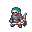

Rastreador
Abrir en la wiki →Explorador con gran talento para abrir cerraduras y que se mueve por el bosque con total agilidad. Nivel: Avanzada. Armas: Espada, Arco. Movimiento 5
- Nivel
- Avanzada
- Movimiento
- 5
- Armas
- Espada, Arco
- Stats base
- PV 24 · Fue 8 · Mag 3 · Hab 8 · Vel 8 · Sue 6 · Def 5 · Res 3 · Car 7
- Habilidad maestra
- Contratiro
- Siguientes clases
- Buscasombras, Truhan